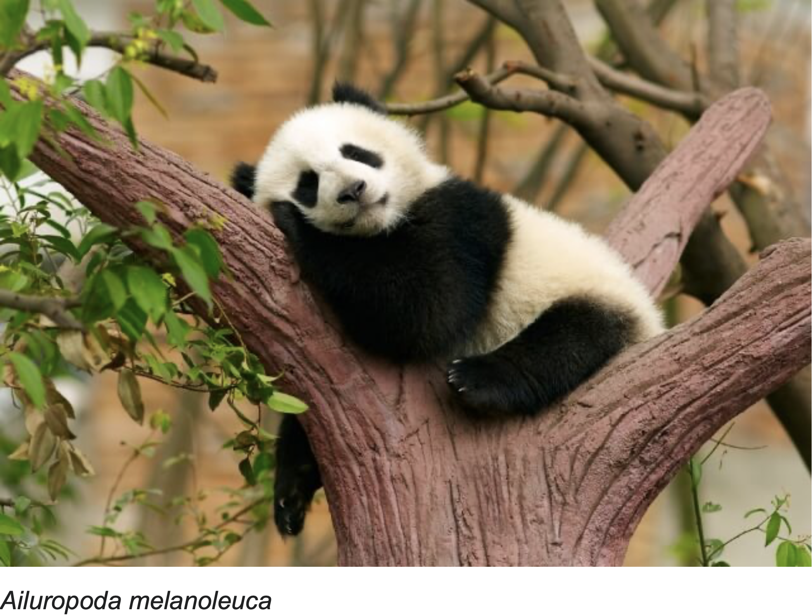
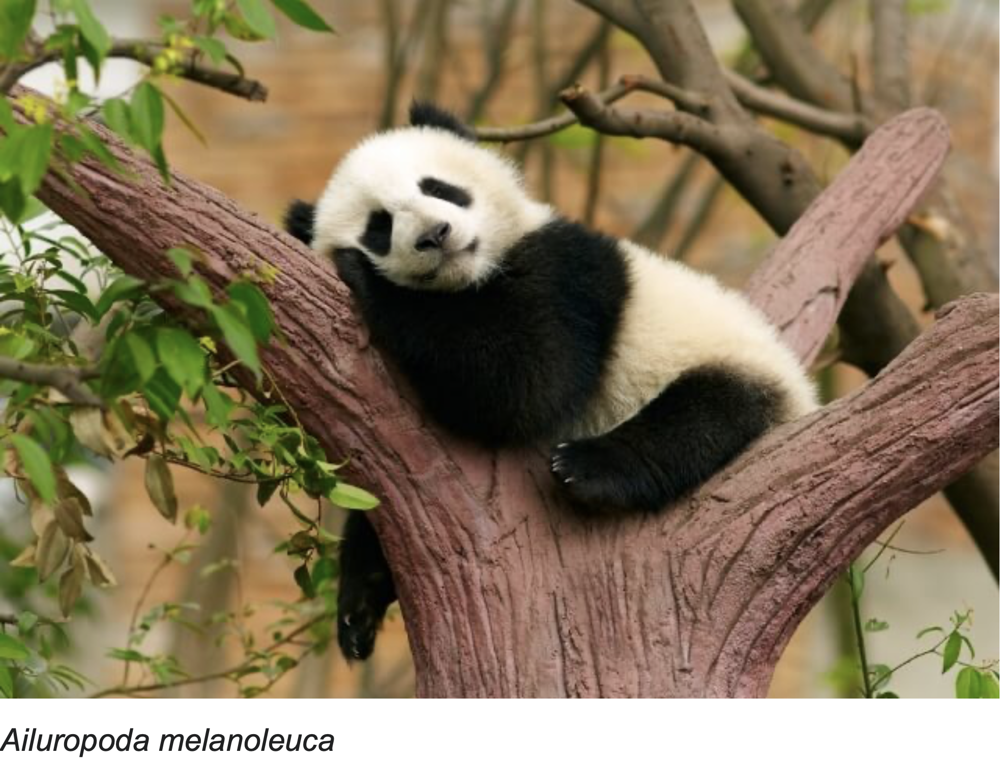

CHAPTER I: GENERAL PRINCIPLES
Article 1
This act has been enacted to conserve wildlife, protect species diversity and
maintain the balance of natural ecosystems. Whatever is not regulated by this act may be
regulated by other compatible legislation.
Article 2
Responsible government authorities for the purpose of this act:
Central
government level: the Council of Agriculture, Executive Yuan, henceforth referred to as the
National Principal Authority (NPA).
Municipal level: the municipal
governments.
County/city level: the county and city governments.
Article 3
Definition of terms:
1.Wildlife: in common circumstances, any animal
living in a natural habitat, including mammals, birds, reptiles, amphibians, fish, insects and
other kinds of animals;
2.Population size: the number of the same species of wildlife
living in a particular space at a particular time;
3.Endangered Species: those wildlife
species whose population size is at or below a critical level so that their survival is in
jeopardy;
4.Rare and Valuable Species: endemic species or those species with a very low
total population;
5.Other Conservation-Deserving Wildlife: species which do not necessarily
have a very low total population, but their survival remains in jeopardy;
6.Wildlife
products: animal carcasses, bones, horns, teeth, skin, hair, eggs or internal organs in whole,
partial or processed form;
7.Habitat: the natural living environment necessary for the
survival of plants and animals;
8.Conservation: any protection, restoration or management
of wildlife based on the principles of species diversity and natural ecological
balance;
9.Utilization: the use of wildlife for cultural, educational, academic or economic
benefit in such a way or form scientifically determined not to be detrimental to the natural
ecological balance;
10.Disturbance: any behavior involving the use of drugs, tools or any
other means so as to interfere with wildlife;
11.Abuse: the use of violence, unsuitable
drugs or other methods to harm wildlife so they cannot maintain their normal physiological
condition;
12.Hunting: the use of drugs, hunting equipment or other tools or methods to
catch or kill wildlife;
13.Processing: the use of wildlife carcasses, bones, horns, teeth,
skins, hair, eggs or organs in their whole or partial form as or to make other
products;
14.Display: placement of wildlife or wildlife products in public areas for people
to view.
Article 4
Wildlife shall be classified in two categories:
1.Protected Species:
Endangered Species, Rare and Valuable Species and Other Conservation-Deserving
Wildlife;
2.General Wildlife: all other wildlife not included in the previous
category.
The Wildlife Conservation Advisory Committee is responsible for the determination
of animals which belong in the first category. The NPA is responsible for compilation and
announcement of the Schedule of Protected Species.
Article 5
The NPA shall establish a Wildlife Conservation Advisory Committee to assist
with wildlife conservation.
Members of the advisory committee will not be paid. The
regulations of establishing the committee will be determined by the NPA. Academic experts,
private conservation organization members, aborigines and other non-governmental representatives
should comprise not less than two-thirds of the total committee membership.
Article 6
To strengthen wildlife conservation, the NPA should establish a Wildlife
Research Institute. The NPA may also invite academic institutions or private organizations to
conduct wildlife surveys, studies, conservation, utilization, education or promotion, etc.
Article 7
To bring together society’s resources to help conserve wildlife, the NPA may
establish a conservation donation account and accept private or artificial person donations. In
addition, the NPA may issue wildlife conservation stamps.
The NPA shall determine the
establishment of the donation account, the usage of the name and logo of the conservation stamps
and their management and issue regulation.
CHAPTER II: CONSERVATION OF WILDLIFE
Article 8
Any construction and land use in Major Wildlife Habitats should be carried out
in ways and areas which least affects the habitat, and the original ecological functions of the
habitat should not be harmed. If necessary, the Authorities shall ask the owners, users or
occupants of a land use project to conduct an Environmental Impact Assessment.
Any farming,
forestry, fishery or animal husbandry development utilization; mine exploration, earth or rock
removal or related works; repair or construction of railroads, public roads or other roads;
construction; establishment of parks or cemeteries; utilization of land for recreation, sporting
or forest recreation areas, waste disposal or other utilization of Major Wildlife Habitats may
begin only after application to the proper local authorities and after approval by the NPA. Only
then can an application for such development be made to the relevant target business
authorities.
Existing facilities, land utilization or development activities have a
significant impact on the wildlife in the area, the NPA may require the relevant person or
target business authority to put forth a plan for improvements within a certain time
limit.
The type and area of the Major Wildlife Habitats referred to above shall be
determined and announced by the NPA, as shall any changes in designation.
Article 9
If land use proceeds before the Environmental Impact Assessment referred to in
Article 8, Paragraph 1, the Authorities shall inform and consult immediately with other
appropriate responsible government agencies to halt the project. If destruction of the wildlife
habitat has taken place, the Authorities and other appropriate government agencies shall request
the responsible parties to put forward a rehabilitation plan within a certain time limit and
should monitor this process. If the responsible parties do not put forward a rehabilitation
plan, or in case of emergency, the Authorities may require that any resultant costs of necessary
rehabilitation procedures be borne by the responsible parties.
Article 10
Local authorities may establish Wildlife Refuges for Major Wildlife Habitats
with special conservation needs, as well as formulate and carry out conservation plans in those
areas. If necessary, they may commission other agencies or organizations to carry out the
plans.
Establishment of a Wildlife Refuge, its modification or elimination shall be
authorized and announced by the NPA after an on-site public hearing on the plan is held and the
opinions of local residents have been heard and approval from the Wildlife Conservation Advisory
Committee.
In emergency or necessary situations, the NPA may, with the approval of the
Wildlife Conservation Advisory Committee, designate or modify Wildlife Refuges.
In the
conservation plan for the Wildlife Refuge, the Authorities may announce restrictive measures
regarding the following:
1.Disturbance, abuse, hunting or killing of General Wildlife,
etc.
2.Collection or cutting of plants, etc.
3.Pollution or destruction of the
environment, etc.
4.Other prohibited or approved actions, etc.
Article 11
Upon announcement of the establishment of a Wildlife Refuge, land inside its
boundaries may be purchased or expropriated by the Authorities according to the law, and
subsequently managed by them.
For land not purchased or expropriated by the Authorities,
the owner, user or occupant shall provide a suitable habitat for wildlife according to
stipulations announced by the Authorities. Before the Authorities announce the stipulations, if
the land in question is used or profited from in a way that is found to harm wildlife
conservation, they may order the modification or elimination of such behavior. Important
national construction works are exempt from the stipulations if they are based on the principle
of not affecting the survival of wildlife and have received the approval of the Wildlife
Conservation Advisory Committee and the NPA.
The Authorities shall compensate the owner or
user of the land for any losses resulting from the above paragraph.
Article 12
To carry out wildlife resource inventories or conservation planning, the
Authorities or commissioned organizations may send people with proper identification into public
and private areas for investigation and application of conservation measures. The owners, users
or managers of the public or private land shall not avoid, refuse of hinder, except when
involving possible military secrets, then the investigation shall be carried out with the
accompaniment of military authorities.
If the investigation runs into any obstructions, or
before the application of conservation measures, the Authorities shall first inform the public
or private owner, user or manager of the land. If there is no way of passing on the information,
the Authorities may use a public announcement.
After the investigation, conservation
authorities or personnel shall keep secret any industrial or military secrets they may have come
across in the course of the investigation.
To carry out the investigation or conservation
measures detailed in Paragraph 1, the owners or users of the public or private land shall be
compensated for any losses. The amount of compensation shall be decided by negotiation and if
negotiations fail, higher-level Authorities shall set the amount.
The above-mentioned
regulation for carrying out investigations or conservation measures shall be determined by the
NPA.
Article 13
In areas which have received utilization approval per Article 8, Paragraph 2,
but still experience damage to wildlife habitats, the Authorities shall order the developer to
put forth a plan for rehabilitation within a certain time limit and monitor this
process.
If the damage occurs in areas where utilization approval was not granted, in
addition to measures in the above paragraph, the Authorities may use emergency methods, which
are to be paid for by the party responsible for the damage.
Article 14
Lost or wild animals which are not endemic to Taiwan may be dealt with by the
Authorities if found to be damaging Taiwan’s plant or animal habitats.
The NPA shall
determine which animals are not endemic to Taiwan.
Article 15
Protected Wildlife which has no owner or is vagrant, or Protected Wildlife
products which are ownerless shall be dealt with by the Authorities. The Authorities may
commission a related agency or organization to take in, temporarily care for, administer
first-aid to, protect or destroy the animals or products.
Article 16
Protected Wildlife shall not be disturbed, abused, hunted, killed, traded,
exhibited, displayed, owned, imported, exported, raised or bred, unless under special
circumstances recognized in this or related legislation.
Protected Wildlife products shall
not be traded, exhibited, displayed, owned, imported, exported or processed, unless under
special circumstances recognized in this or related legislation.
Article 17
With the exception of academic research or educational purposes, hunting of
General Wildlife, including mammals, birds, reptiles and amphibians, shall be conducted in areas
designated by the local authorities and only after obtaining the proper permit issued by local
authorities or contracted organizations or groups.
The local authorities shall design a
system for the designation, modification, elimination and control measures of above-mentioned
hunting areas and species and shall submit this plan to the NPA for final approval, after which
it shall be announced publicly.
The application fee, process and other related matters for
the permit mentioned in Paragraph 1 shall be set by the NPA.
Article 18
Protected Wildlife should be conserved and shall not be disturbed, abused,
hunted, killed or otherwise utilized, except in the following cases:
1.When population size
exceeds the carrying capacity of the area; or
2.for academic research or educational
purposes and with proper approval from the NPA.
The first condition for utilization listed
above shall be approved by the local authorities and the species, location and range, as well as
utilization number, season and method shall be announced by the NPA.
The application
process, fee and other related matters for the second condition shall be set by the NPA.
Article 19
Hunting shall not be undertaken by the following methods:
1.Use of
dynamite or explosives;
2.Use of poisons;
3.Use of electricity, narcotics or other
paralysis methods;
4.Use of nets set up on land;
5.Use of firearms other than an
authorized hunting rifle;
6.Use of traps, snares or other hunting equipment;
7.Use of
other prohibited items or methods announced by the Authorities.
The Authorities may tear
down or destroy any unapproved nets, snares, traps or other hunting devices. The owners, users
or managers of the land on which such devices are located shall not avoid, refuse or hinder such
actions.
Article 20
Those parties who wish to hunt General Wildlife or fish within the areas
defined in Article 17 shall register with the commissioned management organization or group when
entering the area and shall always carry their permit. Upon exiting, the hunters shall report
the species and number hunted and pay a corresponding fee.
The fees shall be set by the
NPA.
Article 21
Wildlife may be hunted or killed under one of the following circumstances,
regardless of Article 17, Paragraph 1; Article 18, Paragraph 1; and Article 19, Paragraph 1;
however, any such action taken against Protected Wildlife shall be first reported to the
Authorities for handling, except in the case of emergency:
1.Danger to public safety or
human life;
2.Damage to crops, poultry, livestock or aquaculture;
3.Being a disease
vector of zoonoses or other pathogens;
4.Danger to the safety of air
transportation;
5.(Abolished)
6.Other reasons approved by the Authorities.
When
Protected Wildlife causes damage to crops, poultry, livestock or aquaculture, and prior
reporting to the Authorities for handling has not been made in case of emergency, Protected
Wildlife may be hunted or killed using humane methods approved by the Authorities to prevent
above-mentioned damage.
Article 21-1
Wildlife may be hunted or killed for traditional cultural or ritual hunting,
killing or utilization needs of Taiwan aborigines, regardless of Article 17, Paragraph 1;
Article 18, Paragraph 1; and Article 19, Paragraph 1.
Hunting, killing or utilizing
wildlife in the condition listed above shall be approved by authorities. The application
process, hunting method, hunted species, bag limit, hunting season, location, and other
regulations shall be announced by the NPA and the national aborigine authority.
Article 22
A Conservation Police Force shall be established to help conserve
wildlife.
Authorities or commissioned organizations or groups may use wildlife conservation
or investigation personnel to conduct investigations, crackdowns or other conservation work in
Wildlife Refuges. If necessary, local police may be called in to cooperate with the conservation
work.
Authorities may give awards to law enforcement official, the common people or
organizations that actively participate or assist authorities to crack down outlaw activities or
report an offence to the authorities. The awards-related regulation shall be announced by the
authorities.
Article 23
The Authorities may assist or encourage any non-government organization or
individual to join or attend international wildlife conservation meetings or other related
activities.
CHAPTER III: IMPORT AND EXPORT OF WILDLIFE
Article 24
No import or export of live wildlife or Protected Wildlife products is allowed
without prior approval from the NPA.
The import or export of live specimens of Protected
Wildlife is limited to academic research institutes, colleges or universities, public or
licensed private zoos for education or academic research.
No import or export of live
marine mammalian wildlife or products thereof is allowed without prior approval from the
NPA.
The import or export of live marine mammalian wildlife or products thereof is limited
to those hunted by indigenous people for their subsistence within their traditional territories
from the country of origin.
To import live marine mammalian wildlife or products thereof, a
relevant certificate must be submitted.
The management and penal provisions of this Act
shall apply to the import, export, trade, display or exhibit of live General marine mammalian
wildlife or products thereof that unauthorized by the NPA. The subject live specimens or
products may be confiscated.
Article 25
Academic research institutes, colleges and universities, public or licensed
private zoos, museums or other wildlife exhibits shall receive the approval of the NPA for
import or export of Protected Wildlife or their products.
Article 26
The NPA may for cultural, hygiene, ecological protection or policy reasons ask
trade authorities to announce a list of wildlife or wildlife products which are forbidden from
import or export under the Foreign Trade Act.
Article 27
In the case of exotic wildlife which is not endemic to Taiwan imported for the
first time, the applicant shall provide the NPA with all relevant information concerning that
species and an Impact Assessment Report to address that animal’s effect upon native fauna and
flora. Such wildlife may be imported only after the approval of the NPA.
The municipal city
or county (city) authorities of the areas where the above-mentioned wildlife is located shall
investigate and monitor these imported wildlife regularly. If it is found that their importation
has had an impact on the habitat of native fauna or flora, the authorities shall order the
owners or users to put forth a plan for prevention or rehabilitation within a certain time limit
and shall monitor this process. In addition, the situation shall be referred to the NPA for
handling.
Article 28
Any academic research institute which cooperates with a foreign research
institute and uses Protected Wildlife or their products for research, exchange, donation or
display shall issue a report to the NPA within one year of import or export of the wildlife or
product.
Article 29
The import or export of wildlife or wildlife products shall be inspected by
customs and the products must match their customs declaration and shall be inspected and
quarantined according to inspection and quarantine regulations by inspection or quarantine
authorities or their commissioned organizations.
Article 30
Wildlife epidemic disease prevention and follow-up examinations shall be
conducted by plant and animal epidemic disease authorities and according to relevant
legislation.
CHAPTER IV. MANAGEMENT OF WILDLIFE
Article 31
Before the NPA announcement, all persons engaged in raising or breeding
Protected Wildlife or exotic wildlife dangerous to the environment, people or animals, or those
possessing Protected Wildlife products as determined by the NPA’s Schedule of Protected Wildlife
shall fill out a data card and keep records with their municipal or county (city) authorities
and within a certain time limit update these records after any change in status.
After the
NPA announcement, those who have legally imported, received through transfer or other legal
means any of the above wildlife or wildlife products, shall take their documents to municipal or
county (city) authorities to register within a certain time limit. Any changes in status shall
also be registered in a similar manner.
Those who have registered according to the above
two paragraphs may be allowed to continue to raise or hold their wildlife or wildlife products,
but no breeding shall be allowed except for academic research or educational purposes and with
the approval of the Authorities.
Those who are engaged in raising or breeding any of the
wildlife listed in Paragraph 1 before promulgation of these amendments shall be assisted by the
Authorities to cease raising or breeding the animals and change occupations within three years
of the date of promulgation. If necessary, the animals may be purchased by the
Authorities.
The purchase of wildlife shall be done in an appropriate and safe manner and
any wildlife may be sent to domestic or foreign educational or academic institutes and zoos, or
taken in and cared for by an organization considered appropriate by the Authorities and
commissioned by them.
If necessary, the Authorities, or a commissioned organization or
group, may mark the wildlife or wildlife products listed in Paragraph 1 and Paragraph 2. In
addition, they may conduct regular or random investigations. The owner or keeper shall not
avoid, refuse or hinder such investigations.
The NPA is responsible for announcing the
wildlife or wildlife products which shall be marked.
Article 32
Wildlife raisers who do not have the permission of the Authorities shall not
set their animals free.
The NPA shall announce a list of species which are regulated by the
above paragraph.
Article 33
The Authorities may send a representative to investigate raised or bred
Protected Wildlife or dangerous wildlife. The owner or keeper of the wildlife shall not avoid,
refuse or hinder the investigation.
Article 34
Raising or breeding of Protected Wildlife or dangerous wildlife shall be cared
for with appropriate husbandry, with attention given to safety and sanitation and the proper
area and facilities. The NPA shall determine regulations for the captive care area, facility and
care standards.
Article 35
Protected Wildlife and its products shall not be traded or displayed or
exhibited in public areas without the permission of the Authorities.
The NPA shall release
a list of the types of Protected Wildlife and products regulated by the above paragraph.
Article 36
The for-profit raising, breeding, trading, processing, import or export of
wildlife shall be approved by municipal or county (city) authorities and shall obtain a business
license according to the law.
The NPA shall set regulations regarding the conditions,
application process, permit contents and other measures governing the for-profit raising,
breeding, trading or processing of wildlife.
Article 37
Endangered Species and Rare and Valuable Species shall be well managed during
raising or breeding and shall not escape. If an escape occurs, the owner or keeper shall either
themselves or with the assistance of local authorities recover the animal.
Article 38
Whenever an Endangered or Rare and Valuable Species dies of illness or for an
unknown reason, the owner or keeper shall have a veterinarian prepare an autopsy report
determining the cause of death and within 30 days after death send the autopsy report to
municipal or county (city) authorities for reference. If the reason for death was not a
contagious disease, then any academic research institute, public or licensed private zoo,
museum, wildlife owner or keeper that wishes to use the carcass to make a specimen, after
approval by the Authorities, may get a veterinarian to sign a death certificate in place of an
autopsy report.
Article 39
If the carcass of a Protected Wildlife species is valuable for academic
research or exhibition, then academic or scientific research institutions, public or licensed
private zoos or museums may purchase it in priority from the owner or keeper.
CHAPTER V: PENAL PROVISIONS
Article 40
The following offenses shall be punished with imprisonment for not less than
six months and not more than five years, and/or a fine of not less than NT$300,000 and not more
than NT$1,500,000:
1.Violation of Article 24, Paragraph 1, unapproved import or export of
live Protected Wildlife Species or products.
2.Violation of Article 35, Paragraph 1,
trading, display or exhibiting with the intent to sell Protected Wildlife and its products.
Article 41
The following offenses shall be punished with imprisonment for not less than
six months and not more than five years, and/or a fine of not less than NT$200,000 and not more
than NT$1,000,000:
1.Violation of Article 18, Paragraph 1, Subparagraph 1, hunting or
killing of a Protected Wildlife species;
2.Violation of Article 18, Paragraph 1,
Subparagraph 2, hunting or killing of a Protected Wildlife species without the approval of the
NPA;
3.Violation of Article 19, Paragraph 1, use of prohibited methods to hunt or kill
Protected Wildlife;
If any of the above offenses are committed in designated Wildlife
Refuges, the offender shall be subjected to the penalty prescribed for such offense up to
1/3.
Any unsuccessful attempt to commit an offense specified in the above Subparagraph 1 is
punishable.
Article 42
The following offenses shall be punished with imprisonment for not more than
one year; detention; and/or a fine of not less than NT$60,000 and not more than NT$300,000; if
the conducts cause the death of protected species, the offender shall be punished with
imprisonment for not more than two years, detention, and/or a fine of not less than NT$100,000
and not more than NT$500,000:
1.Disturbance or abuse of Protected Wildlife as prohibited by
Article 18, Paragraph 1, Subparagraph 1;
2.Violation of Article 18, Paragraph 1,
Subparagraph 2, by disturbance or abuse of the Protected Wildlife without proper approval by the
NPA.
If any of the above offenses are committed in a designated Wildlife Refuge, the
offender shall be subjected to the penalty prescribed for such offense up to 1/3.
Article 43
In violation of Article 8, Paragraph 2, anyone who conducts unauthorized
development projects shall be subjected to a fine of not less than NT$300,000 and not more than
NT$1,500,000.
In violation of Article 8, Paragraph 3, Article 9 or Article 13, anyone who
fails to submit a rehabilitation plan within a set time limit, or fails to carry out the
rehabilitation plan shall be subjected to a fine of not less than NT$400,000 and not more than
NT$2,000,000.
If the above offenses have caused habitat destruction and the habitat has
become inhabitable for wildlife, the offender shall be punished with imprisonment for not less
than six months and not more than five years and/or a fine of not less than NT$300,000 and not
more than NT$1,500,000.
Article 44
In discharging his duty, if the representative of an artificial person,
artificial person, the agent of natural person, employee or other staff violation any one of
Articles 40, 41, 42, or Article 43, Paragraph 3, both the violators and their artificial person
or natural person shall be subjected to the fine set out in relevant Articles.
Article 45
In violation of Article 7, Paragraph 2, anyone who uses the title of wildlife
conservation stamps, uses its logo, or issues wildlife conservation stamps, the offender shall
be subjected to a fine of not less than NT$500,000 and not more than NT$2,500,000. The
unauthorized issue, sale or distribution of wildlife conservation stamps shall be prohibited.
Illegal stamps which have been issued, sold or distributed shall be confiscated.
Article 46
In violation of Article 32, Paragraph 1, the violator shall be subjected to a
fine of not less than NT$50,000 and not more than NT$250,000. If the violation resulted in
damage to the ecosystem, violators shall be subjected to a fine of not less than NT$500,000 and
not more than NT$2,500,000.
Article 47
In violation of Article 27, Paragraph 2, the owner or keeper of wildlife who
fails to submit a prevention or rehabilitation plan or who fails to carry out the plans, the
offender shall be subjected to a fine of not less than NT$300,000 and not more than
NT$1,500,00.
In violation of Article 26, the offender shall be subjected to a fine of not
less than NT$200,000 and not more than NT$1,000,000.
Article 48
A person who falsely labels merchandise as containing Protected Wildlife or
its products shall be subjected to a fine of not less than NT$150,000 and not more than
NT$750,000.
Article 49
Anyone who violates one of the following Articles shall be subjected to a fine
of not less than NT$60,000 and not more than NT$300,000:
1.Violation of regulations
detailed in Article 17, Paragraph 1 or Paragraph 2;
2.Violation of Article 19, Paragraph 1
by the use of prohibited items or methods in hunting General Wildlife;
3.Violation of
Article 19, Paragraph 2, or Article 33 by avoiding, refusing or hindering searches, seizures or
destruction;
4.Violation of Article 27, Paragraph 1;
5.Violation of Article 34 by
failing to meet proper care area, facility and care standards;
6.Violation of Article 18,
Paragraph 2 or Article 36 by not applying for the proper permits or approval.
In the case
of the violation of one of Article 17, Paragraph 1 or Paragraph 2, or Article 19, Paragraph 1,
the proper municipal or county (city) authorities may suspend the permits of concerned parties.
Article 50
Anyone who violates one of the following Articles shall be subjected to a fine
of not less than NT$50,000 and not more than NT$250,000:
1.Violation of Article 10,
Paragraph 4, Subparagraph 1 by hunting or killing General Wildlife;
2.Violation of Article
10, Paragraph 4, Subparagraph 2, 3, or 4 Authorities’ announced restricted
items;
3.Violation of Article 11, Paragraph 2 by not adhering to Authorities’ calls to
modify or eliminate certain behavior.
In violation of Article 10, Paragraph 4, Subparagraph
1, disturbing or abusing General Wildlife, the offender shall be subjected to a fine of not less
than NT$20,000 and not more than NT$100,000.
Article 51
Anyone who violates one of the following Articles shall be subjected to a fine
of not less than NT$10,000 and not more than NT$50,000:
1.Violation of Article 12,
Paragraph 1 by avoiding, refusing or hindering a wildlife resource investigation or the
application of conservation plan measures;
2.Violation of Article 20, Paragraph
1;
3.Violation of Article 24, Paragraph 1 by import or export of General Wildlife without
the approval of the NPA;
4.(Abolished)
5.Violation of Article 28;
6.Violation of
Article 31, Paragraphs 1, 2, 3 or 6;
7.Violation of Article 35, Paragraph 1 by display or
exhibition in a public area of Protected Wildlife, Endangered or Rare and Valuable Species
products with no intent to sell but lacking the proper permission;
8.Violation of Article
37;
9.Violation of Article 38;
10.Any owner or keeper who refuses to sell their
wildlife carcass according to Article 39.
Article 51-1
Taiwan aborigines, in violation of Article 21-1, Paragraph 2 without obtaining
approval from the authorities, hunting, killing or utilizing of General Wildlife for traditional
cultural or ritual hunting, killing or utilization needs, or not for trading purposes shall be
subjected to a fine of not less than NT$1,000 and not more than NT$10,000. However, a pardon
shall be given to the first offender.
Article 52
In the case of the violation of one of Article 40, Article 41, Article 42 or
Article 43, Paragraph 3, the subject Protected Wildlife may be confiscated; the subject wildlife
products, hunting equipment, drugs or other devices shall be confiscated.
Beside the
punitive actions specified in Article 52, Paragraph 1, in the case of the violation of this act,
the subject Protected Wildlife or products, hunting equipment, drugs or other devices may be
confiscated.
If necessary, Authorities may publicly release, repatriate, keep or destroy
the above-mentioned confiscated wildlife/items. The Authorities may request the violator to pay
all the expenses incurred therefrom.
For lawfully confiscated or otherwise acted upon
Protected Wildlife or products, customs or other law enforcement agencies may ask Authorities to
take necessary measure according to the above paragraph.
Article 53
The administrative fines or confiscation described by this act shall be
handled by authorities at all levels.
Article 54
If the administrative fines authorized herein are not paid in a timely manner
after official notice, the Authorities shall initiate court proceedings.
CHAPTER VI: SUPPLEMENTARY PROVISIONS
Article 55
Captive-raised or bred wildlife governed by this act shall be determined and
announced by the NPA.
Article 56
Enforcement rules shall be set by the NPA.
Article 57
This act takes effect upon promulgation.
The amendment of May 30, 2006
takes effect on July 1, 2006.


 


{kind=link}
{kind=link}
{kind=link}